Companion to the prompting-process doc. This one covers the scaffold — the loose, open line drawing the user traces and completes. It records how we got from a too-detailed generated sketch to a clean outer silhouette, the experiments that decided the parameters, and the rebuild that lets the whole pipeline run in the browser on GitHub Pages with no server.
The scaffold is the starting drawing Artifakt hands the user — it should suggest a subject without finishing it, leaving room to trace, deviate, and complete. A raw generated sketch carries far too much information: facial features, interior anatomy, hatching, costume detail. That over-determines the drawing and removes the openness the tool is built around. The goal of contour reduction is to keep the gesture and silhouette and discard everything internal.
The outer boundary and main pose. These carry the gesture — we keep them.
Face, muscles, hatching, costume. These finish the drawing for the user — we drop them.
How much to keep is a single fraction. Too high = a finished illustration. Too low = an unreadable blob.
Two stages: generate a fast gesture sketch, then reduce it to its outer silhouette.
Before touching the pipeline shape, the first attempt at openness was purely lexical: prompting
flux/schnell with art-school vocabulary pulled from a life-drawing moodboard —
"thumbnail sketch," "gesture drawing," "construction lines," "30-second life drawing," "unfinished forms."
The assumption was that this language would push the model to generate images at an earlier stage
of the drawing process — the loose, under-built look of an actual construction sketch.
It didn't work that way. The model reads this vocabulary as a visual style, not a structural state. Outputs were still complete, anatomically resolved subjects — just rendered with sketch-like linework on top. A "gesture drawing of a horse" came back as a fully-formed horse with loose-looking lines, not an actual early-stage gesture with open, ambiguous form.
A structural state: an incomplete drawing, genuinely under-determined, the way a human's hand lands a few seconds into a sketch.
A style: a finished, fully-resolved subject wearing sketch-like rendering — confident lines, but nothing actually left open.
Diffusion models don't have a notion of "stage of completion" to prompt toward. "Unfinished" is description, not a lever.
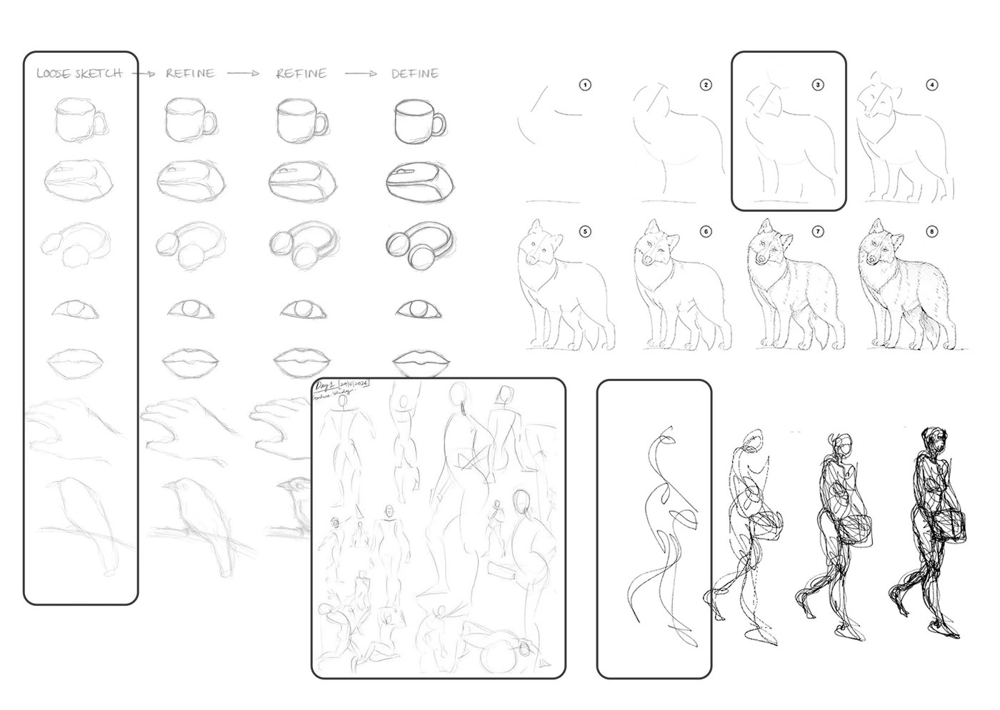
First attempt at openness: seed an abstract SVG motif and run flux/dev/image-to-image
at varying strengths, hoping the model would "loosen" it into a sketch. It didn't. Even at low strength the
output read as a finished, shaded illustration with a background — the opposite of an open scaffold.
This is also the experiment that burned most of the fal.ai credit (1,628 megapixels), so it's a cost lesson too.
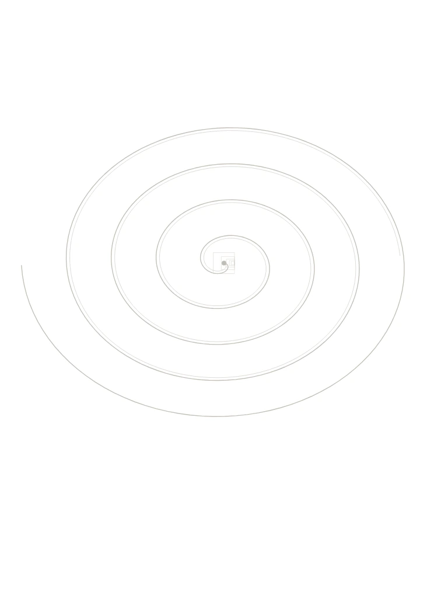
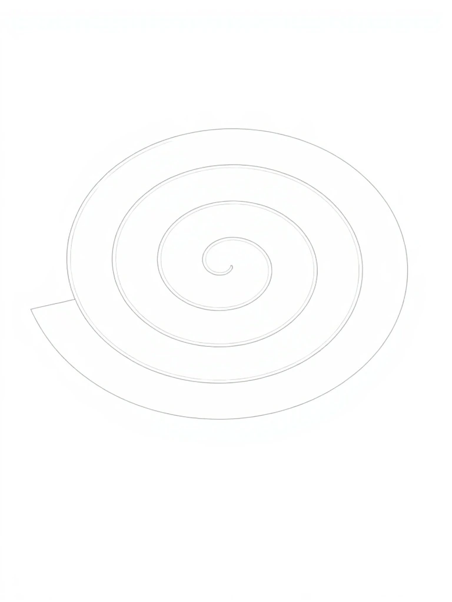
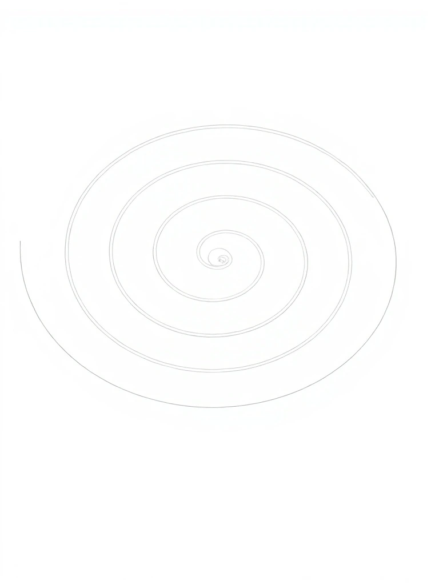
Generate a horse gesture sketch, run Canny edge detection, then findContours with
RETR_EXTERNAL (outer boundaries only), sort by area, and keep the largest fraction.
Four variants sweep the dial. Variant C (keep 50%) won: a clean readable silhouette with the pose intact
and the interior gone.
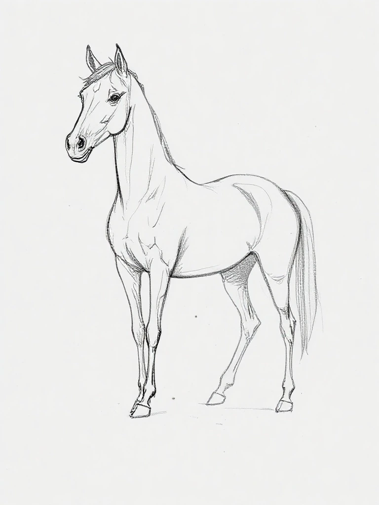
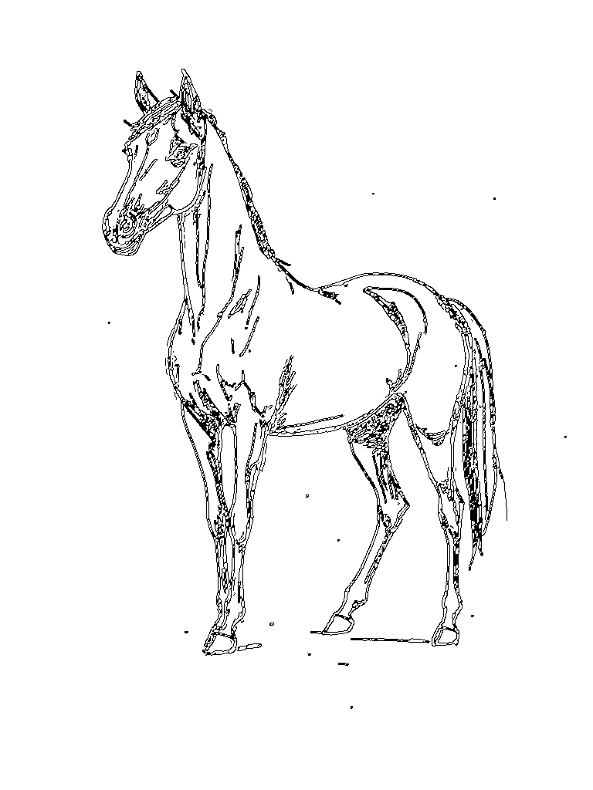
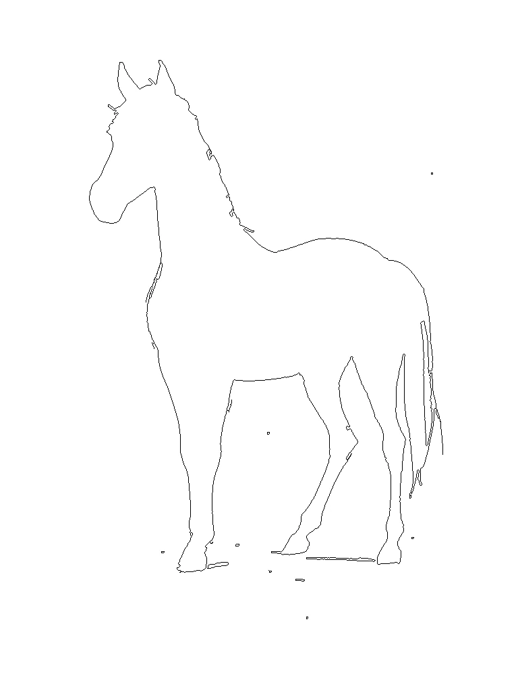
| Variant | Keep fraction | Read |
|---|---|---|
| A — full | 100% | Finished-looking, over-determined |
| B — light | 70% | Better, but interior detail lingers |
| C — medium | 50% | Silhouette + gesture, interior gone — chosen |
| D — heavy | 30% | Too little to read as the subject |
Does Variant C hold across different subjects, not just the horse it was tuned on? Tested two contrasting keywords: an abstract one (strong) and a complex figurative one (drag queen). Same pipeline, same parameters. The drag queen is the most convincing case: the hair silhouette and body curve survive while the face and costume detail dissolve — exactly the openness we want.
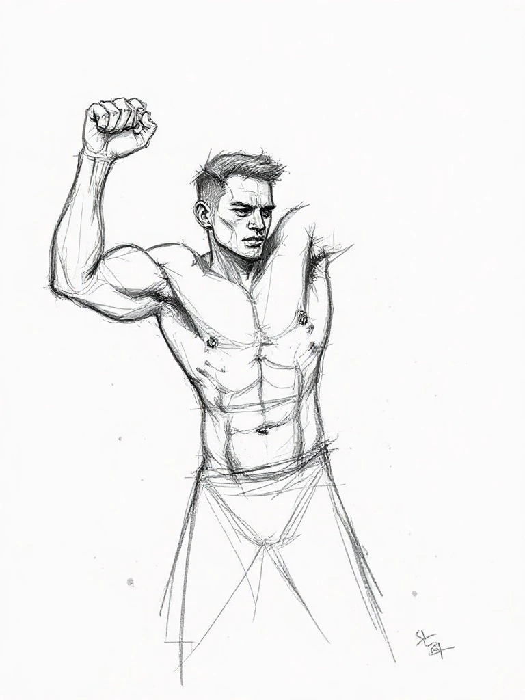
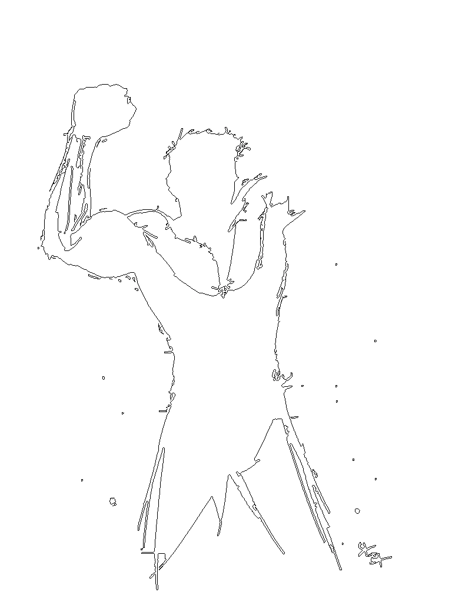
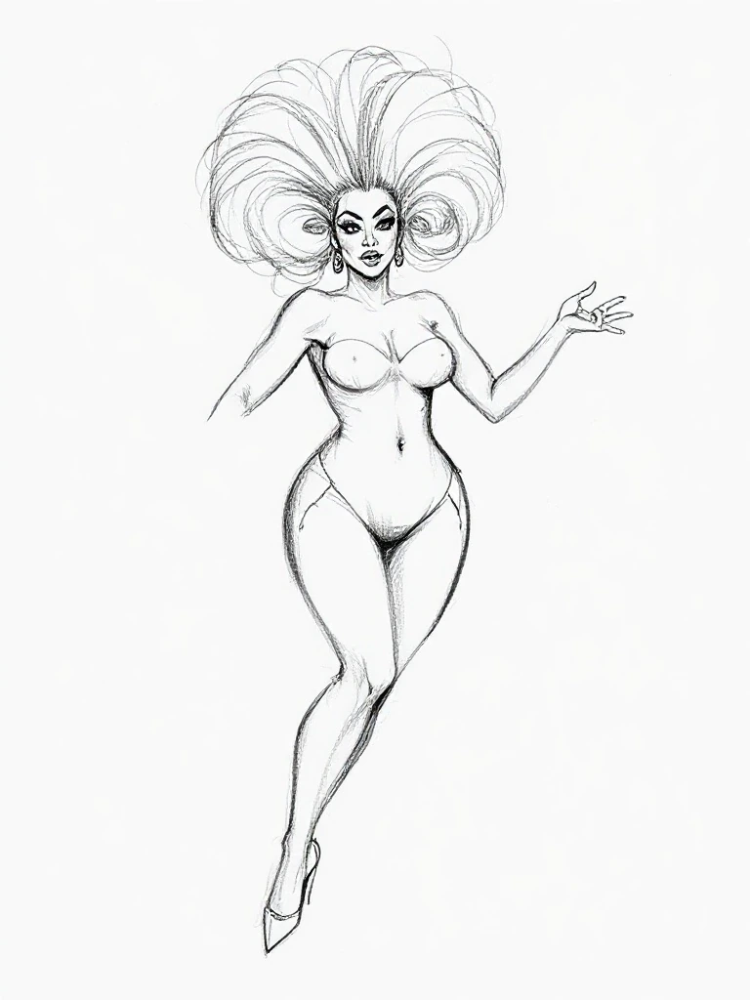
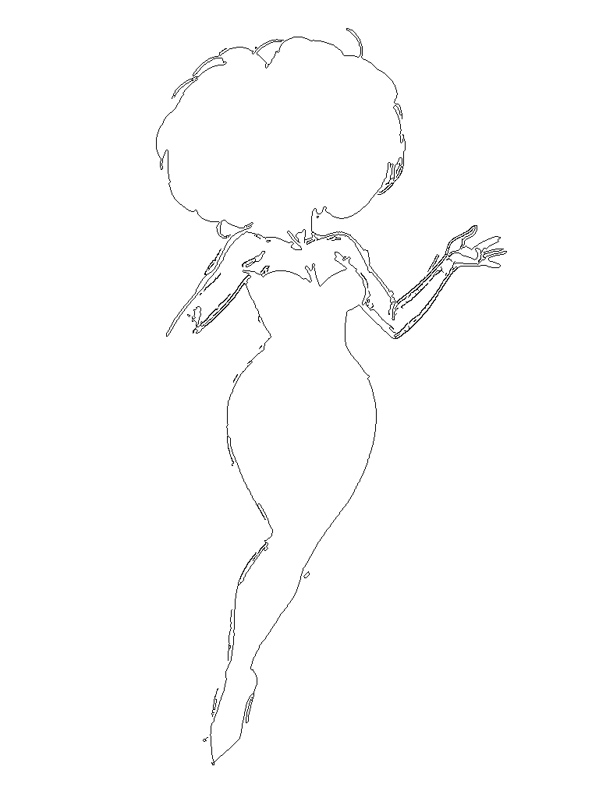
The experiments ran in Python with OpenCV behind a local proxy. But Artifakt has to run publicly on GitHub
Pages — a static host with no backend: no localhost, no proxy, no Python, no OpenCV. So the entire reduction
pipeline was rebuilt in browser-side JavaScript on a Canvas, reproducing the exact OpenCV behaviour,
including the RETR_EXTERNAL "outer boundary only" result.
Read Canvas pixels, weighted luma.
Separable 3×3 kernel, matches cv2.GaussianBlur(3,3).
Sobel gradients → non-max suppression → double-threshold hysteresis (20/60).
Binary dilation (radius 5) so the outline is continuous.
Fill from the borders; whatever it can't reach is the figure.
Undo the dilation, then draw only figure pixels touching the background = outer silhouette.
RETR_EXTERNAL
in OpenCV only traces the outer boundary of a filled region. The flood-fill reproduces that: background is
reachable from the edges, the figure is the unreachable interior, and we trace just its rim.// Production reduction toggle in index.html const SCAFFOLD_CONTOUR_REDUCTION = true; // pipeline: grayscale → _gauss3 → _canny(20,60) → _outerSilhouette → black-on-white PNG gray = luma(pixels); edges = _canny(gray, w, h, 20, 60); kept = _outerSilhouette(edges, w, h); // dilate → flood-fill bg → erode → trace rim
The fal.ai key is visible in the static HTML. Mitigation: $20 spending cap is set. Optional hardening: a Cloudflare Worker that holds the key server-side.
Tunable. Increase if the outline has gaps; decrease if it gets too thick/blobby.
50% is global. Some subjects might benefit from an adaptive fraction based on contour count.